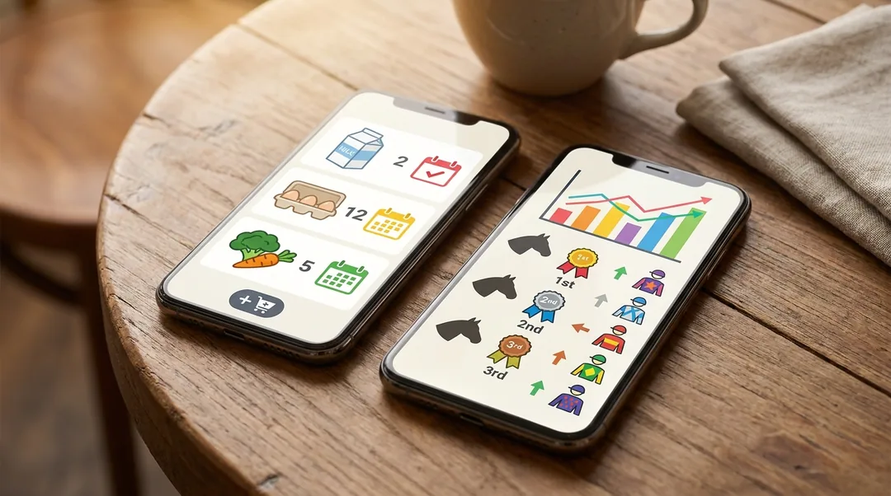

議員さん100人に対して、AIが1人ずつ違う調査と提案文を作成。
結果、丸3日 → 半日 に圧縮しても1通ずつパーソナライズが保たれる。
今まさに動いているのが、奈良県議会・奈良市議会の議員さんへの営業です。来年（2027年4月）の統一地方選に向けて、SNS運営サポートを提案しています。
議員さん全員に同じテンプレで営業メール送ったら、誰の心にも響かないですよね。逆に1人ずつ調べて文章書いたら、1人30分〜1時間かかって、100人なら丸3日仕事です。うちはAIにこれを丸ごとやらせています。
具体的にAIがやってること：
「数で押す営業」と「個別最適の営業」を両立させてるのが特徴です。これは奈良だけじゃなく、業種ごと・エリアごとに展開できます。
1本のポッドキャスト から、9媒体すべてに最適化された投稿を自動生成。
ビデオポッドキャストを1本だけ収録します。それだけで、AIが勝手に9媒体すべてへ投稿してくれます。
1本のしゃべりから、媒体ごとに最適な長さ・トーンに書き分けて、合計数十本の投稿を自動生成します。文章だけじゃなくて、ショート動画も切り出してくれます。
媒体ごとの違い（例）：X はキャッチー短文、note は SEO 対応の長文、LinkedIn はビジネス文体、Threads はラフな共感トーン、ショート系は縦型動画 — 全部AIが媒体特性を理解して書き分けます。
撮影終了後、AIが 無音カット → テロップ → 章立て → BGM → ショート切出し を自動実行。
数日 → 数時間 に圧縮。
ポッドキャストや解説動画を撮影したあと、AIが勝手に以下を全部やってくれます。
さらに 自分の声をAIにコピー させてあるので、後から原稿を書いて差し替えても、自分が喋ってるようにナレーションをつけられます。
チャット1往復 で、Gmail・カレンダー・リマインドが 同時並列で 完結する。
GmailとGoogleカレンダーをAIが直接操作できる状態にしてあります。なので、こういうことがチャット1往復で終わります。
タップで友だち追加 → そのまま受講生視点で質問してみてください
これは今まさに僕が作っている事業案件です。TikTokショップに参入したい人向けの講座を運営していて、その受講生対応をAIチャットボットで自動化しています。
具体的にチャットボットがやっていること：
これがあると何が変わるか：通常、受講生が増えれば増えるほど質問対応の人件費が膨らみます。でもAIチャットボットがあれば、教える側の人手を増やさずに、受講生体験を上げることが可能。これは「教育・コーチング・コンサル業」全般に応用できる仕組みです。
中小企業の 「人件費10人分が出せない」 という壁を、
AIで超える仕組みを 自社で実証 → クライアントへ提供。
普通、中小企業が「全SNSを毎日更新」「全国の見込み客に個別営業」「動画コンテンツを毎週量産」を全部やろうとしたら、10人以上の人件費がかかります。だから諦める会社が多い。
でも AIで全部代替できたら、1人の社長でも大企業並みのアウトプットが出せる。これは中小企業の勝負軸が完全に変わるレベルの話です。
そして、これを言うだけじゃなくて、自分の事業で人柱になって実証しているのが今の状態。机上の理論じゃなくて、自分自身の会社の毎日の業務がこの仕組みで回ってます。
これを実証しきったら、同じ仕組みをパッケージにしてクライアント企業に提供する予定です。
3業種すべてに共通する型は 「個別最適 × 大量自動化」。
奈良の議員さん向けの仕組みが、そのまま医師の集患にも応用できる可能性が高い。
ここまでの仕組みは、僕の事業に特化したものに見えるかもしれませんが、「個別最適化 × 大量自動化」を必要とする業種すべてに応用できる可能性があります。具体的にはこんな展開が考えられます。

ここまで 事業向け の例で説明してきましたが、AIで作れるものは事業に限りません。「やりたいことを言葉にできれば、AIがそれを形にしてくれる」のが、いま起きている本質的な変化です。
身近で実際に動いているもので、こんな例があります。
つまり、医師の集患も、不動産の問い合わせ対応も、奈良の議員さんへの個別営業も、冷蔵庫の中身管理も、競馬の予想も、根っこは同じです。「こういうことできたら便利やな」と思ったその瞬間に、形にできる時代になっています。
セミナーでは、こういう日常レベルの応用例も含めて「自分でも触ってみたい」と感じてもらえる内容にできます。